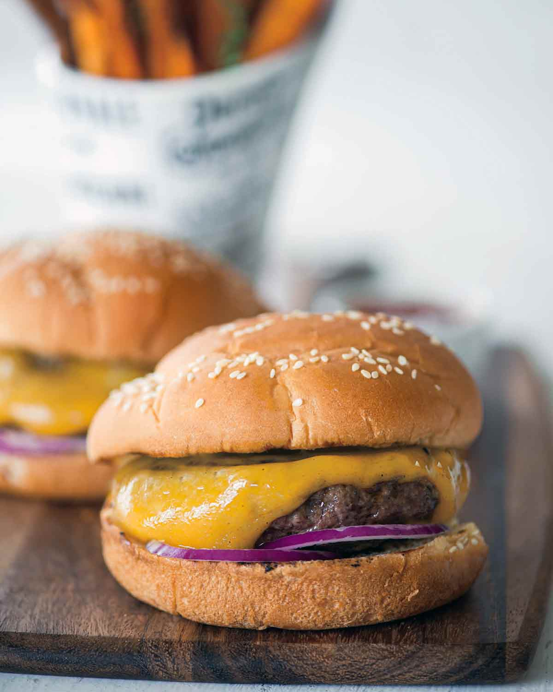

Cheeseburger Recipe

Description
This classic cheeseburger, made with freshly ground chuck, salt, and pepper, and topped with your favorite condiments, is proof that some of the best things in life are the simplest things.
Ingredients
- 1-1/2 pounds chuck roast (ask your butcher to grind it for hamburger)
- Healthy pinch kosher salt
- Freshly cracked black pepper
- 6 slices sharp Cheddar cheese
- 6 hamburger buns
- Condiments of your choice
- Bread-and-Butter Pickles homemade or store-bought
- 1 red onion thinly sliced
Steps
- Shape the ground chuck into 6 patties, each about 1/2-inch thick. Be careful not to pack the meat too tightly or you'll end up with dry burgers. Sprinkle a healthy pinch of salt over each burger. Crack some pepper over the top as well.
- Prepare a grill or place a grill pan or cast-iron skillet over medium-high heat for 3 minutes.
- Place the burger over the heat, seasoned side down. Toss some salt and pepper over the now top of the burgers and cook for 1 to 2 minutes. Flip the burgers and cook for 2 minutes more. Flip the burgers again and grill for 1 minute more. Flip the burgers again, place a slice of cheese on each burger, and cook for 1 minute more. The burgers will be medium-rare. If you prefer your burgers cooked medium to well-done, transfer them to a cooler part of the grill or reduce the heat under the pan to medium-low and leave the burgers on the heat a little longer.
- Transfer the burgers to a warm plate but do not cover them. Place the hamburger buns, cut side down, on the heat and warm until the desired toastiness.
- Assemble the burgers and buns on a clean plate, using any condiments you like. You're now ready to bite into the tastiest, juiciest burger ever.